Меню
Главная
вернёт вас на главную страницу.
Добавить
открывает страницу, где можно создать новое мероприятие.
Помощь
открывает текущую страницу, где можно ознакомиться со справочной информацией.
Войти
позволит войти в систему под учёткой админа.
Главная страница
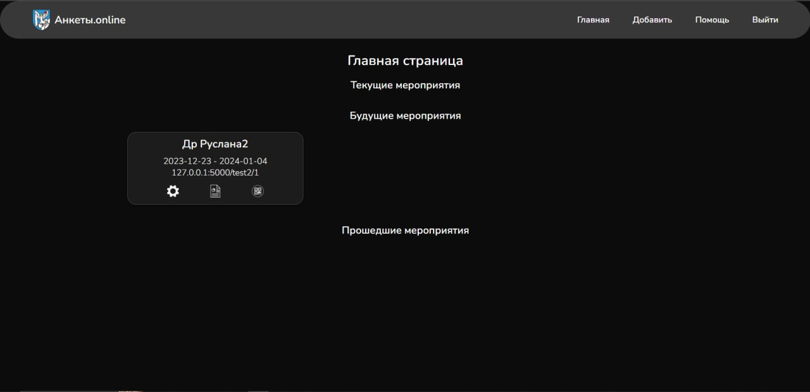
На главной странице можно увидеть все мероприятия(текущие, будущие и прошедшие).
При нажатии на можно отредактировать мероприятие.
При нажатии на можно увидеть отчёт
по мероприятию, если оно активно или прошло.
При нажатии на можно будет увидеть QR-код мероприятия.
Отчёт
В отчёте по мероприятию можно увидеть список вопросов, которые были в анкете, а также среднуюю оценку по каждому вопросу.
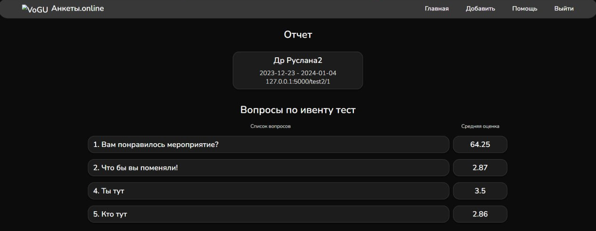
Для более подробного отчёта необходимо в адресную строку добавить
.../r
(будет открыта страница с подробным отчётом).
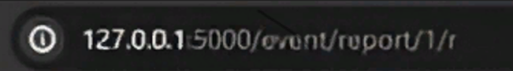
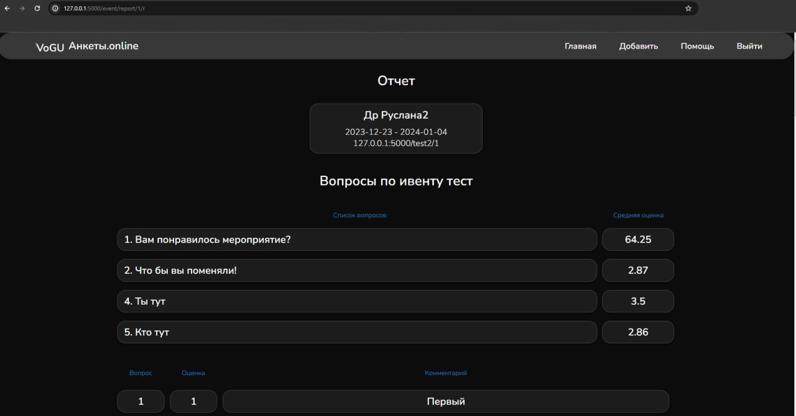
Содание анкеты для мероприятия
Нажимаем на
Добавить
на главной странице. После нажатия откроется следующая страница:
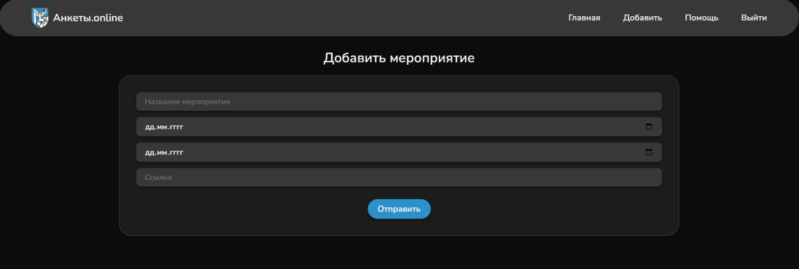
1. Пишем название мероприятия
2. Вводим или выбираем дату начала анкетирования по мероприятию
3. Вводим или выбираем дату окончания анкатерования по мероприятию
4. Создаём ссылку на мероприятние
5. Нажимаем
Отправить
Далее откроется главная страница и необходимо нажать на ,
в созданном мероприятии и откроется следующая страница:
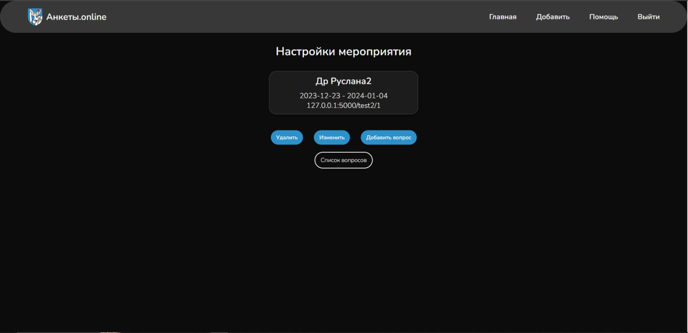
Нажимаем на
Добавить вопрос
и откроется страница:
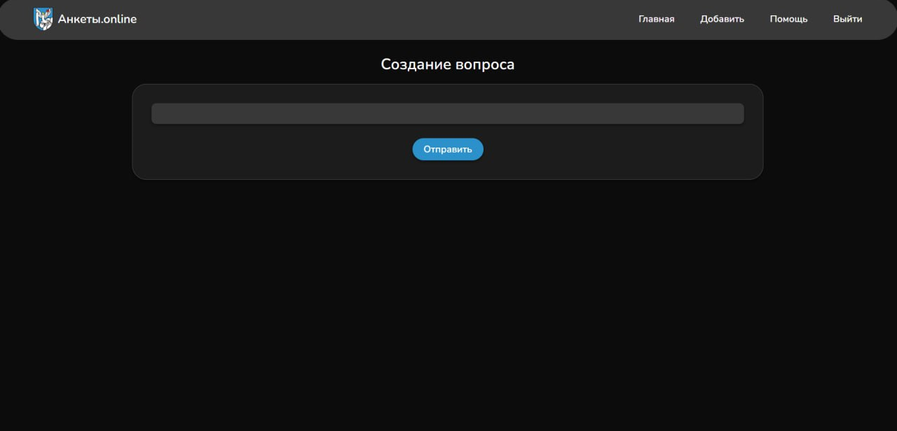
Пишем вопрос, который хотим видеть в анкете. Повторяем добавление вопроса необходимое количество раз.
Редактирование мероприятия
Для редактирования нужно нажать на в интересующем вас мероприятии,
откроется страница редактрования:
Удалить
позваолит удалить мероприятие
Изменить
позволит измениить мероприятие (откроется страница изменения мероприятия)
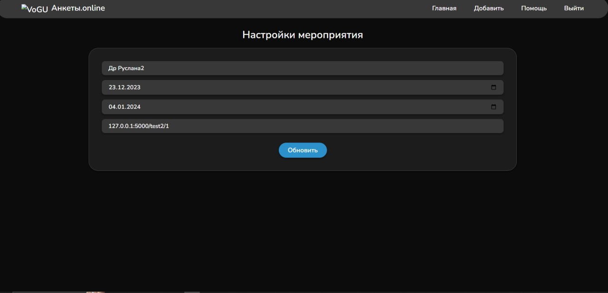
Можно изменить название мероприятия, даты проведения и ссылку на мероприятие
Добавить вопрос
позволит добавить вопрос (откроет страницу создания вопроса)
Список вопросов
откроет страницу со списком вопросов из анкеты по мероприятию
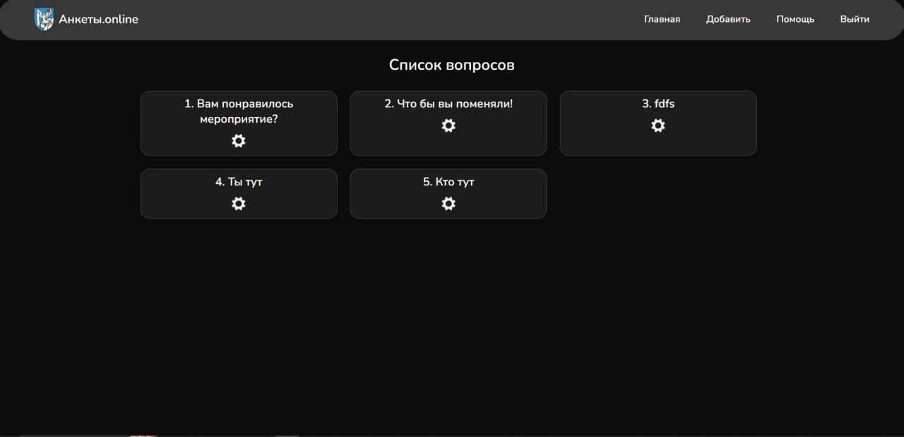
на этой странице можно изменить вопросы при нажатии на
Регистрация и авторизация
Чтобы авторизоваться или зарегестрироваться нужно на главной странице нажать
Войти
(откроется страница авторизация)
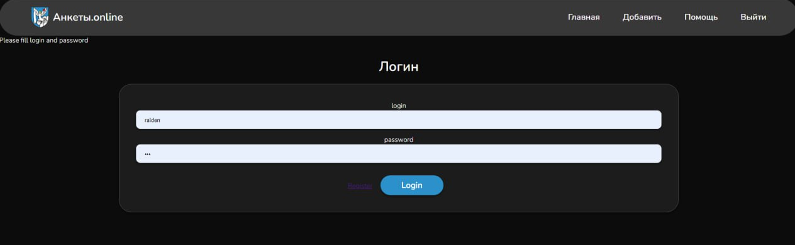
Для авторизации нужно ввести логин и пароль и нажать
Login
Для регестрации нужно нажать на
Register
(откроется страница регестрации)
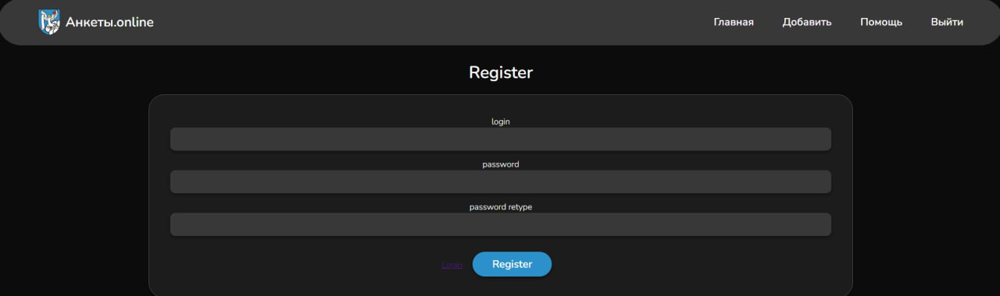
Чтобы зарегестрироваться нужно ввести придуманный логин и пароль (пароль нужно ввести дважды для проверки верности ввода)
и нажать на
Register